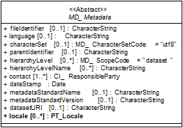

Metadata komt voor bij meerdere informatie disciplines. Indien hier over metadata wordt gesproken betreft het metadata die betrekking heeft op geo-informatie. Dit metadata profiel richt zich op de beschrijving van de metadata van geografische datasets en dataset series.
Het Nederlandse profiel op ISO 19119 voor services versie 1.2 richt zich op de beschrijving van metadata van geografische dataservices. Als er services beschikbaar zijn dient zowel de service als de dataset van metadata te worden voorzien. De relatie tussen metadata van data, metadata van services en de data en services is opgenomen in bijlage 8. In de metadata wiki zijn alle aspecten van het aanmaken van metadata beschreven.
Scope
Dit metadata profiel bevat de semantische beschrijving van de verplichte of door conditie verplichte metadata elementen, de kernset, van een dataset of dataset serie. Dit metadata profiel beschrijft tevens de encoding van de metadata van een dataset of dataset serie zodat de uitwisseling tussen machines of mens en machine kan plaatsvinden. De optionele set is een aanvulling op de kernset en voorziet in de behoefte van het geo-werkveld aan eeneen brede gemeenschappelijke basis van metadata-elementen, in het bijzonder voor het beheer.
Bij het voldoen aan dit profiel wordt tevens aan de INSPIRE verplichting voldaan.
Deze verplichting geldt alleen voor metadata van de door INSPIRE benoemde geografische datasets.
Context
Figuur 1 plaatst het Nederlandse metadata profiel voor geografie in zijn internationale en sectorale context. De ISO-kernset is de kleinste eenheid, een selectie uit ISO 19115.
Context profiel.
De Nederlandse kernset bevat de Europese kernset (INSPIRE) plus een selectie van metadata-elementen uit ISO 19115. In dit profiel zijn de metadata elementen met hun oorsprong aangegeven in bijlage 4.
Sectoren in Nederland kunnen een eigen uitbreiding op het Nederlandse profiel ontwikkelen. Voorwaarde is dat de Nederlandse kernset metadata onderdeel is van het sectorale metadata profiel. Deze sectorale uitbreidingen dienen onderdeel te zijn van ISO 19115.
Leeswijzer
Hoofdstuk 2 toont de normatieve verwijzingen, hoofdstuk 3 bevat de XSD schema's waarna in hoofdstuk 4 de gehanteerde termen en definities worden beschreven. Het formele deel van het profiel waarin onder andere de verplichte elementen, de kernset, worden beschreven die gelden voor metadata voor geografie staan in hoofdstuk 5. In hoofdstuk 6 staan de optionele elementen. De volgende hoofdstukken geven op specifieke onderdelen van het profiel uitleg. De bijlagen dienen ter ondersteuning van de hoofdstukken.
Normatieve verwijzing
De volgende normen, standaarden en specificaties zijn toegepast in dit profiel:
ISO 19115:
EN ISO 19115:2005, Geographic information - Metadata EN ISO 19115:2005 is de adoptie door CEN van ISO 19115:2003
EN ISO 19115:2005/AC:2008 , Geographic information – Metadata, Technical Corrigendum 1 EN ISO 19115:2005/AC:2008 is de adoptie door CEN van ISO 19115/Cor.1:2006
CEN ISO/TS 19139:2009, Geographic information - Metadata – XML Schema Implementation CEN ISO/TS 19139:2009 is de adoptie door CEN van ISO/TS 19139:2007
ISO 19108, EN ISO 19108:2005, Geographic information – Temporal Schema EN ISO 19108:2005 is de adoptie door CEN van ISO 19108:2002
ISO 8601:2004, Data elements and interchange formats - Information interchange - Representation of dates and times
ISO 10646-1, Information technology ― Universal Multiple-Octet Coded Character Set (UCS) ― Part 1: Architecture and Basic Multilingual Plane
ISO 639-2, Codes for the representation of names of languages - Part 2: Alpha-3 code
ISO TC 46/SC 4, 2009, Dublin Core Metadata Element Set, ook gepubliceerd als ISO 15836:2009
INSPIRE, 2008, Implementing Rules for Metadata
INSPIRE, 2010, INSPIRE Metadata Implementing Rules: Technical Guidelines based on EN ISO 19115 and EN ISO 19119,0 v1.2
Relevante XSD schema's
Alle relevante schema’s zijn in de OGC schema repository beschikbaar. Deze zijn vrij beschikbaar onder http://schemas.opengis.net/. De volgende tabel toont het relevante schema voor dit profiel.
ISO 19139: Dit zijn de XML encoding schema’s voor zowel ISO 19115:2003 en ISO 19119:2005/FDAM 1. De subdirectorie ‘/srv’ bevat de encoding voor ISO 19119:2005/FDAM 1. In de metadata dienen ook de codelijsten die op deze locatie te vinden zijn gehanteerd te worden.
Termen en definities
De volgende termen en definities zijn van toepassing op het onderwerp en toepassingsgebied van deze standaard.
Abstracte klasse Een abstracte klasse is een klasse zonder objecten.
Applicatie Manipulatie en verwerking van data om in gebruiksbehoefte te voorzien [ISO 19101].
Codelijst Een uitbreidbare lijst met de domeinwaarden inclusief code voor elk toepasbaar attribuut [ISO 19136].
Conditioneel element Metadata element moet gevuld worden met een waarde, indien de conditie van toepassing is.
Dataset Identificeerbare collectie van data [ISO34 2002 / ISO 19101:2002]. Een dataset mag een kleinere groep van data zijn, gelimiteerd door beperkingen zoals een geografisch gebied of geo-objecttype ("feature type"), die aanwezig is in een grotere dataset. Theoretisch kan een dataset bestaan uit een enkel geo-object of een een attribuut van een geo-object dat aanwezig is in een grotere dataset. Het Nederlandse metadata profiel voor geografie gaat niet uit van dit soort type datasets.
Dataset serie Verzameling van datasets met dezelfde productspecificaties [ISO47 2003 / ISO 19115:2003]. Productspecificaties zijn thema, resolutie en methodologie.
Default element Metadata element met een standaardwaarde.
Expliciete metadata Metadata die niet direct of indirect in de dataset opgeslagen zit en daarom handmatig moet worden opgevoerd.
feature Abstractie van een verschijnsel in de werkelijke wereld [ISO 19101].
Voorbeeld het verschijnsel ‘Eifel Toren’ kan met andere soortgelijke verschijnselen geclassificeerd worden in een featuretype ‘toren’.
Gerelateerde datasets Datasets die onderling gerelateerd zijn.
Impliciete metadata Metadata die direct of indirect in de dataset opgeslagen zit en automatisch gegenereerd zou kunnen worden.
Metadata Informatie die ruimtelijke datasets en dataset series beschrijft welke het mogelijk maakt om deze te zoeken, evalueren en te gebruiken.
Metadata dataset Metadata die een beschrijving geeft van een specifieke dataset [ISO 19101].
Namespace Verzameling van namen, geïdentificeerd door een URI-referentie, die gebruikt worden in XML-documenten als elementnamen en atribuutnamen [ISO 19136: Geography Markup Language].
Optioneel element Element wat gevuld mag zijn met een waarde.
Profiel Set van één of meerdere basisstandaarden en indien van toepassing de identificatie van hoofdstukken, paragrafen, opties en parameters van deze basisstandaarden die noodzakelijk zijn voor het volbrengen van een specifieke functie [ISOIEC21 1998, ISO34 2002].
Een basisstandaard is één van de standaarden uit de serie ISO 19100 of andere ICT-standaard die gebruikt kan worden als bron voor componenten voor een profiel of productspecificatie.
Resource Verzamelnaam voor datasets, dataset series, services en applicaties [ISO 19115:2003].
Verplicht element Element wat gevuld moet zijn met een waarde.
Metadata elementen
Dit hoofdstuk geeft de verplichte of bij conditie verplichte elementen weer inclusief uitleg in de vorm van voorbeelden of default waarden.
Metadata elementen overzicht
In Tabel 2 staan de verplichte of bij conditie verplichte elementen. Bij elk conditioneel element is de conditie benoemd. De in bijlage 4 opgenomen tabel “verantwoording metadata elementen” is gebaseerd op INSPIRE Metadata Implementing Rules: Technical Guidelines based on EN ISO 19115 and EN ISO 19119, v1.2. Hiermee is de relatie gelegd tussen dit document en INSPIRE.
Metadata element
V/C
Conditie en/of opmerking
Titel van de bron
V
Samenvatting
V
Status
V
Hiërarchieniveau
V
Hiërarchieniveaunaam
C
Verplicht als Hiërarchieniveau niet gelijk is aan dataset.
URL
C
Dit element is conditioneel. Het is voor INSPIRE verplicht als er een link is naar meer informatie over de bron en/of er een link is die toegang geeft tot gerelateerde services, ook al is die service voorzien van metadata. Voor datasets die buiten INSPIRE vallen en waarvoor gerelateerde services aanwezig zijn, is het verplicht als er geen service metadata is.
Protocol
C
Verplicht als er een URL is opgegeven.
Naam
C
Verplicht gesteld voor de OGC:WMS, OGC:WFS en OGC:WCS.
Unieke Identifier van de bron.
V
Taal van de bron
C
Het is verplicht als de bron tekstuele informatie bevat.
Karakterset van de bron
C
Voor INSPIRE verplicht als voor de uitwisseling van de bron geen GML wordt gebruikt en de gebruikte karakterset geen utf8 is. Voor niet INSPIRE datasets is het verplicht als de waarde niet voldoet aan de ISO/IEC 10646 standaard.
Onderwerp
V
Trefwoord
V
Thesaurus
C
Het is verplicht als een keyword uit een thesaurus afkomstig is.
Thesaurus datum
C
Het is verplicht als een keyword uit een thesaurus afkomstig is.
Thesaurusdatum type
C
Het is verplicht als een keyword uit een thesaurus afkomstig is.
Omgrenzenderechthoek
Minimum x-coördinaat
V
Maximum x-coördinaat
V
Minimum y-coördinaat
V
Maximum y-coördinaat
V
Datum van de bron
V
Op z’n minst één van de elementen Datum voltooiing, Datum publicatie en Datum laatste wijziging verplicht.
Datumtype van de bron
Niveau kwaliteitsbeschrijving
V
Algemene beschrijving herkomst
V
Toepassingsschaal
C
Verplicht als er een toepassingsschaal gespecificeerd kan worden.
Resolutie
C
Verplicht als er een resolutie gespecificeerd kan worden.
Codereferentiesysteem
V
Verantwoordelijke organisatie voor namespace referentiesysteem
V
Temporeel referentiesysteem
C
Verplicht als de dataset temporele informatie bevat die niet gebaseerd is op de Gregoriaanse kalender of de Coordinated Universal Time.
Naam distributie formaat
C
Het is alleen verplicht als de dataset een INSPIRE bron is.
Versie distributie formaat
C
Het is alleen verplicht als de dataset een INSPIRE bron is.
Specificatie distributie formaat
C
Het is alleen verplicht als de dataset een INSPIRE bron is.
Conformiteit indicatie met de specificatie
C
Het is alleen verplicht als de dataset een INSPIRE bron is of als de informatie is gemodelleerd volgens een specifiek informatie model.
Verklaring
C
Het is alleen verplicht als de dataset een INSPIRE bron is of als de informatie is gemodelleerd volgens een specifiek informatie model.
Specificatie
C
Het is alleen verplicht als de dataset een INSPIRE bron is of als de informatie is gemodelleerd volgens een specifiek informatie model.
Specificatiedatum
C
Het is alleen verplicht als de dataset een INSPIRE bron is of als de informatie is gemodelleerd volgens een specifiek informatie model.
Specificatiedatum type
C
Het is alleen verplicht als de dataset een INSPIRE bron is of als de informatie is gemodelleerd volgens een specifiek informatie model.
Type waarde
C
Verplicht voor INSPIRE datasets als voor netwerken de aansluiting van hartlijnen niet is verzekerd.
Topologische samenhang
C
Verplicht voor INSPIRE datasets als voor netwerken de aansluiting van hartlijnen niet is verzekerd.
(Juridische) toegangsrestricties
V
Het is verplicht op zijn minst één van de drie elementen (juridische) toegangsrestricties, overige beperkingen of veiligheidsrestricties op te nemen.
Overigebeperkingen
Veiligheidsrestricties
Gebruiksbeperkingen
V
Verantwoordelijke organisatie bron
V
Verantwoordelijke organisatie bron: e-mail
V
Verantwoordelijke organisatie bron: rol
V
Metadata unieke identifier
V
Parent unieke identifier
C
Verplicht als er een dataset met hogere hiërarchie bestaat.
Dit element dient om de naam van de dataset in vast te leggen.
Data type of Domein
Voorbeeld
String
Nieuwe kaart van Nederland
Samenvatting
identificationInfo[1]/*/abstract[ISO19139]
Dit element bevat een korte beschrijving van de inhoud van de dataset.
Data type of Domein
Voorbeeld
String
Grenzen van de waterschappen per 1-1-2005 inclusief adresgegevens voor testdoeleinden
Status
identificationInfo[1]/*/status[ISO 19139]
Dit element is opgenomen in de Nederlandse kernset, omdat de status van de dataset als zoekcriterium kan dienen en een indirecte kwaliteitseigenschap weergeeft. De waarden komen uit codelijst B.5.23 van ISO19115.
Data type of Domein
Voorbeeld
B.5.23
completed
Hiërarchieniveau
hierarchyLevel[ISO19139]
Het element geeft aan waarop de metadata betrekking heeft, de dataset of dataset serie. Voor de waarden geldt de codelijst B.5.25 MD_ScopeCode uit ISO19115.
Data type of Domein
Voorbeeld
B.5.25
dataset
Toelichting
De kernset van het Nederlands metadata profiel voorgeografie geldt niet alleen voor geografische datasets, maar ook voor datasetseries. Volgens ISO 19115 is een dataset serie een verzameling geografischedata die gelijke karakteristieken hebben ten aanzien van het thema, de resolutie en/of methodologie. Veelal geven dataproducenten aan of er sprake is van een dataset serie. Voorbeelden van dataset series zijn:
Verzameling luchtfoto’s die in dezelfde vlucht met dezelfde camera en filmtype zijn gemaakt;
Continue satellietopname van één omwenteling om de aarde;
Verzameling rasterdata, verkregen uit een algemene serie van papieren kaarten;
TOP10NL in het verleden, opgedeeldin kaartbladen.
Toepassing van metadata op dataset series maakt het gebruikers van de metadata mogelijk om op een hoger niveau dan individuele datasets data te zoeken. Metadata van dataset series is geschikt voor het zoeken op globale karakteristieken van beschikbare data, maar niet voordiepgaand onderzoek naar de kwaliteit van specifieke datasets. Hiervoor is metadata van datasets noodzakelijk. Figuur 2 geeft een schematische weergave van de relatie tussen de metadata van datasetseries en datasets weer. De hiërarchische relatie tussen een dataset en datasetserie is altijd van verticale aard.
Gerelateerde datasets.
Hiërarchieniveaunaam
hierarchyLevelName[ISO19139]
Dit element is conditioneel. Het is verplicht als Hiërarchieniveau niet gelijk is aan dataset. Het bevat de naam van het hiërarchieniveau waarvoor de metadata is beschreven. Indien het hierarchyniveau dataset is dient dit veld niet ingevuld te worden.
Dit element is conditioneel. Het is voor INSPIRE verplicht als er een link is naar meer informatie over de bron en/of er een link is die toegang geeft tot gerelateerde services, ook al is die service voorzien van metadata. Voor datasets die buiten INSPIRE vallen en waarvoor gerelateerde services aanwezig zijn, is het verplicht als er nog geen service metadata is. Het element kan meerdere keren voorkomen, bijvoorbeeld als link naar een zip bestand, een catalogue, een data loket, WMS en WFS.
Het bevat een valide URL voor online toegang tot de bron of als er niet een directe link naar de bron aanwezig is naar een locatie waar informatie over de bron beschikbaar is. Voor een service dient deze gelijk te zijn aan de resourcelocator uit het Nederlands metadata profiel op ISO19119 voor services.
Dit element is conditioneel. Het is verplicht als er een URL is opgegeven. Bijvoorbeeld naar een zip bestand, WMS of WFS.
Het bevat het protocol voor het afhandelen van de URL. De codelijst SV_ServiceType wordt hier gehanteerd. De codelijst is uitgebreid met INSPIRE Atom. Onder download vallen bijvoorbeeld ZIP documenten van shapefiles.
Data type of Domein
Voorbeeld
SV_ServiceType
website
Data type of Domein
Voorbeeld
SV_ServiceType
OGC:WMS
Toelichting
Het element Protocol, is van belang voor het automatisch kunnen downloaden van de dataset, en/of het benaderen van de service die deze dataset representeert. Het maakt gebruik van een codelijst die het Nederlandse metadata profiel op ISO19119 wordt vastgelegd, maar het element is een ISO19115 element. Door gebruik te maken van deze codelijst is de invulling van het element software onafhankelijk. Het metadataelement Naam legt de relatie naar de layer in de service die de dataset representeert, door middel van de naam van de layer of de naam van het featuretype. In deze elementen wordt maar één maal per servicetype de relatie gelegd, waarmee de dataset als service gerepresenteerd wordt, zodat het mogelijk wordt de dataset via een service te benaderen.
Dit element is conditioneel. Voor Nederland is de naam verplicht gesteld voor de OGC:WMS, OGC:WFS en OGC:WCS. Dit element bevat de layer name uit de WMS of WCS of de featureType name van een WFS.
Dit element bevat de waarde die een object uniek identificeert in een namespace. Geadviseerd wordt om gebruik te maken van een betekenisloze identifier die wereldwijd uniek is zoals de Universal Unique Identifier.
Data type of Domein
Voorbeeld
string
550e8400-e29b-41d4-a716-446655440000
Taal van de bron
identificationInfo[1]/*/language[ISO 19139]
Dit element is conditioneel. Het is verplicht als de brontekstuele informatie bevat. Het bevat de code van de taal waarin de tekst in de bron is opgenomen. Gebruik hiervoor alleen de drie-letter codes van 639-2/B (bibliographic codes), zoals gedefinieerd op http://www.loc.gov/standards/iso639-2/. Voor Nederlands is de code dut, zie Appendix A.
Data type of Domein
Voorbeeld
ISO 639-2
dut
Karakterset van de bron
identificationInfo[1]/*/[ISO 19139]
Voor INSPIRE verplicht als voor de uitwisseling van de bron geen GML wordt gebruikt en de gebruikte karakterset geen utf8 is. Voor niet INSPIRE datasets is het verplicht als de waarde niet voldoet aan de ISO/IEC 10646 standaard. Utf8 en utf16 voldoen aan deze standaard.
Data type of Domein
Voorbeeld
B.5.10
utf16
Onderwerp
identificationInfo[1]/*/topicCategory[ISO 19139]
Het bevat de belangrijkste onderwerpen van de dataset. De te hanteren onderwerpen zijn opgenomen in codelijst B.5.27.
Het element bevat in het algemeen gebruikte woorden of geformaliseerde zinnen om een dataset of datasetserie te beschrijven. Voor datasets en dataset series die betrekking hebben op INSPIRE dient het de relevante thema’s beschrijven zoals ze zijn gedefinieerd in annex I, II en III van de directive. Deze INSPIRE thema’s zijn opgenomen in de thesaurus. Voor INSPIRE datasets dient men voor het beschrijven van de relevante thema’s tenminste één trefwoord uit deze thesaurus over te nemen, in de exacte notatie (met evt. spelfouten en hoofdletters waar toegepast), voor overige datasets mag deze thesaurus gebruikt worden. Het is ook mogelijk zelf gedefinieerde trefwoorden, of trefwoorden uit een andere thesaurus in te vullen.
Dit is een conditioneel element. Het is verplicht als een trefwoord uit een thesaurus afkomstig is zoals in ieder geval voor de INSPIRE thema’s. Het bevat de naam van de thesaurus waar het trefwoord uit afkomstig is. Voor INSPIRE wordt de naam "GEMET – INSPIRE themes, version 1.0" gehanteerd, zoals voorgeschreven in de metadataguidelines.
Dit is een conditioneel element. Het is verplicht als een trefwoord uit een thesaurus afkomstig is zoals in ieder geval voor de INSPIRE thema’s. Het bevat de publicatie datum van de thesaurus waar het trefwoord uit afkomstig is. Het formaat van de datum is JJJJ-MM-DD (met streepjes).
Dit is een conditioneel element. Het is verplicht als een trefwoord uit een thesaurus afkomstig is zoals in ieder geval voor de INSPIRE thema’s. Het bevat het type gebeurtenis waar de datum betrekking op heeft. Type gebeurtenis wordt gekozen uit codelijst B.5.2 uit ISO 19115. Mogelijke gebeurtenissen zijn: creatie-, publicatie-, of revisiedatum.
Dit element bevat de meest westelijke coördinaat uit de horizontale dekking van de dataset weergegeven in longitude en lattitude in decimale graden (noord en oost als positievewaarden). De coördinaten dienen te worden weergegeven volgens referentiesysteem WGS 84.
Data type of Domein
Voorbeeld
Decimal
2.50
Toelichting: Omgrenzende rechthoek
De geografische locatie kan op drie manier worden beschreven, namelijk door een omgrenzende polygon (1), een omgrenzende rechthoek (2) of door een beschrijving (3). De omgrenzenderechthoek is het meest eenvoudig vast te leggen en is verplicht.
De omgrenzende rechthoek is de kleinste extent die mogelijk is waarmee de dataset goed weergegeven wordt.
De klasse EX_GeographicBoundingBox bestaat uit vier elementen die de hoeken van de omgrenzende rechthoek in decimale graden beschrijft.
Dit element bevat de meest oostelijke coördinaat uit de horizontale dekking van de dataset weergegeven in longitude en lattitude in decimale graden (noord en oost als positievewaarden). De coördinaten dienen te worden weergegeven volgens referentiesysteem WGS 84.
Dit element bevat de meest zuidelijke coördinaat uit de horizontale dekking van de dataset weergegeven in longitude en lattitude in decimale graden (noord en oost als positievewaarden). De coördinaten dienen te worden weergegeven volgens referentiesysteem WGS 84.
Dit element bevat de meest noordelijke coördinaat uit de horizontale dekking van de dataset weergegeven in longitude en lattitude in decimale graden (noord en oost als positievewaarden). De coördinaten dienen te worden weergegeven volgens referentiesysteem WGS 84.
Dit element bevat het type gebeurtenis waar de datum betrekking op heeft. Type gebeurtenis wordt gekozenuit codelijst B.5.2. Mogelijke gebeurtenissen zijn: creatie-, publicatie-, of revisiedatum.
Data type of Domein
Voorbeeld
B.5.2
creation
Niveau kwaliteitsbeschrijving
dataQualityInfo/*/scope/*/level[ISO19139]
Dit element beschrijft het niveau waarop de kwaliteitsinformatie betrekking heeft. Dit niveau wordt gekozen uit codelijst B.5.25. Mogelijkeniveau’s zijn: dataset, series en featureType. Als voor INSPIRE het niveau featureType wordt gekozen dient het element features te worden gebruikt om de featuretype namen in op te nemen.
Data type of Domein
Voorbeeld
B.5.25
dataset
Algemene beschrijving herkomst
dataQualityInfo/*/lineage/*/statement[ISO19139]
Dit element beschrijft de proceshistorie. Ook kwaliteitsinformatie kan hierin worden opgenomen. Kwaliteitsinformatie kan meerdere keren worden opgenomen. Er dient slechts één set kwaliteitsinformatie opgenomen worden die betrekking heeft op de gehele dataset. Hierin wordt ook het element algemene beschrijving herkomst opgenomen.
Data type of Domein
Voorbeeld
string
In dit bestand is bij de grenzen van de provincies, daar waar ze grenzen aan de Waddenzee, Noordzee en Ijsselmeer, uitgegaan van de land-watergrens en niet van de bestuursrechtelijke provinciegrens.
Dit element is conditioneel. Het is verplicht als er een toepassingsschaal gespecificeerd kan worden. Het element bevat de mate van detail aangeduid als schaalaanduiding van een vergelijkbare hardcopy kaart. Het element kan twee keer voorkomen, hiermee wordt een interval aangegeven. Deze dient vanuit de klasse spatialResolution te worden aangemaakt.
Dit element is conditioneel. Het is verplicht als er een resolutie gespecificeerd kan worden. Het element bevat de resolutie in meters. Het element kan twee keer voorkomen, hiermee wordt een interval aangegeven. Deze dient vanuit de klasse spatialResolution te worden aangemaakt. De meeteenheid voor lengte uit de codelijst ISOStandardUnits, de meter, wordt in het attribuut UnitOfMeasurevan distance opgenomen.
Dit elementbevat de Alfanumerieke waarde die het gebruikte referentiesysteem van de dataset aangeeft. EPSG geeft deze code’s uit. Voor het RD wordt de code 28992gehanteerd.
Data type of Domein
Voorbeeld
string
28992
Toelichting
Naast het horizontaal ruimtelijk referentiesysteem kan ook het verticaal ruimtelijk referentiesysteem in de metadata worden opgeslagen, bijvoorbeeld NAP. Deze gegevens kan men in het optionele element Code verticaal referentiesysteem plaatsen.
De EPSG codeskunnen gevonden worden op de website www.epsg.org. Aanbevolen wordt om de Access database van de site te downloaden
Verantwoordelijke organisatie voor namespace referentiesysteem
Dit element bevat de naam of identificatie van de persoon of organisatie verantwoordelijk voor de namespace (van het referentie systeem). Gebruik hiervoor standaard EPSG.
Dit element is conditioneel in dit profiel. Het is alleen verplicht als de dataset temporele informatie bevat die niet gebaseerd is op de Gregoriaanse kalender of de Coordinated Universal Time. Dit element bevat de Alfanumerieke waarde die het gebruikte referentiesysteem van de dataset aangeeft.
Dit element is conditioneel in dit profiel. Het is alleen verplicht als de dataset een INSPIRE bron is. Dit element bevat de naam van het distributie formaat van de dataset. Deze informatie is te vinden in de INSPIRE dataspecificaties in de paragraaf genaamd Encoding.
Dit element is conditioneel in dit profiel. Het is alleen verplicht als de dataset een INSPIRE bron is. Dit element bevat de versie van het distributie formaat van de dataset. Deze informatie is te vinden in de INSPIRE dataspecificaties in de paragraaf genaamd Encoding.
Dit element is conditioneel in dit profiel. Het is alleen verplicht als de dataset een INSPIRE bron is. Dit element bevat de specificatie van het distributie formaat van de dataset. Deze informatie is te vinden in de INSPIRE dataspecificaties in de paragraaf genaamd Encoding.
Data type of Domein
Voorbeeld
string
D2.8.I.8 Data Specification on Hydrography – Guidelines
Dit element is conditioneel in dit profiel. Het is alleen verplicht als de dataset een INSPIRE bron is of als de informatie is gemodelleerd volgens een specifiek informatie model. In dit element kan dan worden weergegeven of het wel of niet conform de INSPIRE specificatie is.
Dit element is conditioneel in dit profiel. Het is alleen verplicht als de dataset een INSPIRE bron is of als de informatie is gemodelleerd volgens een specifiek informatie model. Het bevat de verklaring van de betekenis van de conformiteit.
Data type of Domein
Voorbeeld
String
De hier gehanteerde domeinen wijken af van de domeinen uit de dataspecificaties van INSPIRE
Dit element is conditioneel in dit profiel. Het is alleen verplicht als de dataset een INSPIRE bron is of als de informatie is gemodelleerd volgens een specifiek informatie model. Het bevat de titel van de specificatie of richtlijnen of informatie model waar de dataset conform aan dient te zijn.
Data type of Domein
Voorbeeld
String
“INSPIRE Data Specification on Administrative Units – Guidelines v3.0.1”.
Dit element is conditioneel in dit profiel. Het is alleen verplicht als de dataset een INSPIRE bron is of als de informatie is gemodelleerd volgens een specifiek informatie model. Het bevat de datum van de specificatie of richtlijnen of informatie model waar de dataset conform aan dient te zijn. Het formaat van de datum is JJJJ-MM-DD (met streepjes).
Dit element is conditioneel in dit profiel. Het is alleen verplicht als de dataset een INSPIRE bron is of als de informatie is gemodelleerd volgens een specifiek informatie model. Het bevat het type gebeurtenis waar de datum betrekking op heeft. Type gebeurtenis wordt gekozen uit codelijst B.5.2. Mogelijke gebeurtenissen zijn: creatie-, publicatie-, of revisiedatum.
Data type of Domein
Voorbeeld
B.5.2
publication
Type waarde
dataQualityInfo/*/report/*/[ISO 19139]
Dit element is conditioneel in dit profiel. Het is verplicht voor INSPIRE datasets als voor netwerken de aansluiting van hartlijnen niet is verzekerd. Het bevat de meeteenheid waarmee de topologische samenhang is vastgelegd.
Data type of Domein
Voorbeeld
UnitOfMeasure
cm
Topologische samenhang
dataQualityInfo/*/report/*/[ISO 19139]
Dit element is conditioneel in dit profiel. Het is verplicht voor INSPIRE datasets als voor netwerken de aansluiting van hartlijnen niet is verzekerd. Het bevat de tolerantie waarmee de topologische samenhang is vastgelegd
Het is verplicht op zijn minst één van de drie elementen (juridische) toegangsrestricties, overige beperkingen of veiligheidsrestricties op te nemen. Als er geen beperkingen zijn dient men dat bij overige beperkingen aan te geven. Als er overige beperkingen worden opgenomen, dient hier de waarde “anders” gekozen te worden. In bijlage 6 is uitgewerkt hoe gebruiksvoorwaarden en public domein mark toe te passen. Dit element bevat toegangseisen die er zorg voor dragen dat privacy of intellectueel eigendom gewaarborgd zijn en elke andere speciale beperkingen voor het verkrijgen van de metadata of data. De waardes komen uit codelijst B.5.24 van ISO19115.
Het is verplicht op zijn minst één van de drie elementen (juridische) toegangsrestricties, overige beperkingen of veiligheidsrestricties op te nemen. Als er geen beperkingen zijn dient men dat bij overige beperkingen aan te geven. Als er een waarde in dit element wordt ingevuld, dient bij het element (juridische) toegangsrestricties de waarde “anders” gekozen te worden. In bijlage 6 is uitgewerkt hoe gebruiksvoorwaarden en public domein mark toe te passen. Dit element bevat andere restricties en vereisten voor toegang en gebruik van de data. Als er geen beperkingen zijn dient men de tekst “geen beperkingen” op te nemen.
Het is verplicht op zijn minst één van de drie elementen (juridische) toegangsrestricties, overige beperkingen of veiligheidsrestricties op te nemen. Als er geen beperkingen zijn dient men dat bij overige beperkingen aan te geven. In bijlage 6 is uitgewerkt hoe gebruiksvoorwaardenen public domein mark toe te passen. Dit element bevat de soort restrictie op de data. Hiervoor is codelijst B.5.11.
Dit element bevat toepassingen waarvoor de dataset niet geschikt is. Voor INSPIRE, bevat het indien van toepassing ook prijsinformatie voor het gebruik van de dataset.
Dit element is de identificatie van de verantwoordelijke organisatie. Van de organisatie wordt de organisatie naam vastgelegd. Gebruik de volledig uitgeschreven naam van de verantwoordelijke organisatie. De afkorting kan toegevoegd worden aan de organisatienaam. Voor de correcte overheidsnamen zie: http://almanak.overheid.nl/.
Data type of Domein
Voorbeeld
String
Nederlandse organisatie voor toegepast-natuurwetenschappelijk onderzoek (TNO)
Dit element geeft de rol van de verantwoordelijke organisatie van de bron weer. Voor de rol van de organisatie wordt een codelijst gehanteerd, zie zie Codelijst B.5.5 CI_RoleCode.
Data type of Domein
Voorbeeld
B.5.5
pointOfContact
Metadata unieke identifier
fileIdentifier[ISO 19139]
Dit element bevat de unieke identifier voor de metadata file. Geadviseerd wordt om gebruik te maken van een betekenisloze identifier die wereldwijd uniek is zoals de Universal Unique Identifier
Data type of Domein
Voorbeeld
string
550e8400-e29b-41d4-a716-446655440000
Parent unieke identifier
parentIdentifier[ISO 19139]
Dit element is conditioneel in de kernset. Het is verplicht als er een dataset met hogere hiërarchie is. Het bevat de unieke ID van de metadata waarvan deze metadata een subset is.
Data type of Domein
Voorbeeld
string
550e8400-e29b-41d4-a716-446655440000
Verantwoordelijkeorganisatie metadata
contact/*/organisationName[ISO 19139]
Dit element bevat de organisatie verantwoordelijk voor de metadata. Gebruik de volledig uitgeschreven naam van de verantwoordelijke organisatie. De afkorting kan toegevoegd worden aan de organisatienaam. Voor de correcte overheidsnamen zie: http://almanak.overheid.nl/.
Data type of Domein
Voorbeeld
string
Nederlandse organisatie voor toegepast-natuurwetenschappelijk onderzoek (TNO)
Verantwoordelijke organisatie metadata rol
contact/*/role[ISO 19139]
Dit element bevat de rol van de organisatie verantwoordelijk voor de metadata. Voor de rol van de organisatie wordt een codelijst gehanteerd. INSPIRE vereist pointOfContact.
Dit element bevat het e-mail adres van de organisatie verantwoordelijk voor de metadata.
Data type of Domein
Voorbeeld
string
wegwijzer@tno.nl
Metadatadatum
dateStamp[ISO 19139]
Datum waarop de metadata gemaakt ofgewijzigd is. Het formaat van de datum is JJJJ-MM-DD (met streepjes).
Data type of Domein
Voorbeeld
Datum
2008-02-25
Taal van de metadata
Language[ISO 19139]
In dit element wordt vastgelegd in welke taal de metadata is beschreven. Het bevat de code van de taal waarin de tekst in de metadata is opgenomen. Gebruik hiervoor alleen de drie-letter codes van 639-2/B (bibliographic codes), zoals gedefinieerd op http://www.loc.gov/standards/iso639-2/. De code voor Nederlands is dut, zie Appendix A. Over het algemeen is dut de default waarde.
Data type of Domein
Voorbeeld
ISO 639-2
dut
Metadata standaard naam
metadataStandardName[ISO 19139]
Dit element is nodig om uitbreidingen op profielen te duiden. Dit element bevat de naam van de standaard.
Data type of Domein
Voorbeeld
string
ISO 19115
Metadatastandaard versie
metadataStandardVersion[ISO 19139]
Dit element is nodig om uitbreidingen op standaarden aan te geven. Dit element bevat de versie (profiel) van de metadatastandaard die wordtgebruikt.
Data type of Domein
Voorbeeld
string
Nederlandse metadata profiel op ISO 19115 voor geografie 1.3
Optionele set metadata
Naast de verplichte kernset heeft de Nederlandse metadatastandaard voor geografie een optionele set. Deze set bestaat uit een selectie van metadata-elementen uit ISO 19115, die nuttig zijn voor het beheer van geografische datasets en –series. Het is niet de volledige ISO19115 set. Als men meer metadata wil vastleggen als mogelijk met de verplichte kernset dan dient men bij voorkeur, om de interoperabiliteit te bevorderen, de benodigde elementen uit deze optionele set te kiezen. Tabel 3 bevat deze optionele set. Van elk metadata element wordt achtereenvolgens gegeven: de metadata naam (naam waaronder de metadata entiteit wordt aangeduid), het ISO nummer, de (eventueel specialiseerde) Nederlandse metadata element naam van het element in ISO 19115 en de bijbehorende definitie. In bijlage 2 worden de onderlinge relaties tussen de elementen in de kernset en de optionele set aangegeven via de abstracte klassen die ISO 19115 gebruikt.
Metadata naam
ISO nr.
Nederlandse metadata-element naam
Definitie
Metadata karakterset
4
Metadata karakterset
Volledige naam van de karakter codeerstandaard om de metadata set te beschrijven.
Locale
11.2
Locale
Geeft informatie over de alternative gebruikte talen
Contactpersoon metadata Geonovum adviseert de contactgegevens te ontsluiten via een website (URL organisatie) met daarop de relevante gegevens in plaats van deze elementen.
375
Naam contactpersoon metadata
Naam van de contactpersoon.
377
Rol contactpersoon metadata
Beschrijving op welke manier de persoon betrokken is bij de metadata.
Contactpersoon metadata contactgegevens
408
Telefoonnummer
Telefoonnummer.
409
Faxnummer
Faxnummer.
381
Adres
Contactadres.
382
Plaats
Plaatsnaam behorende bij het contactadres van de organisatie.
383
Provincie
Provincie behorende bij het contactadres van de organisatie.
384
Postcode
Postcode behorende bij het contactadres van de organisatie.
385
Land
Land behorende bij het contactadres van de organisatie.
397
URL
URL van de organisatie
Code verticaal referentiesysteem
207
Code verticaal referentiesysteem
Alfanumerieke waarde die het gebruikte verticale referentiesysteem van de dataset aangeeft.
Verantwoordelijke organisatie voor namespace verticaal referentiesysteem
208.1
Verantwoordelijke organisatie voor namespace verticaal referentiesysteem
Naam of identificatie van de persoon of organisatie verantwoordelijk voor de namespace van het verticale referentie systeem.
Verantwoordelijke organisatie voor namespace temporele referentiesysteem
208.1
Verantwoordelijke organisatie voor namespace temporele referentiesysteem
Naam of identificatie van de persoon of organisatie verantwoordelijk voor de namespace van het temporele referentie systeem.
Alternatieve titel
361
Alternatieve titel
Vertaling van de dataset titel in een andere taal of een aanvulling op de dataset titel (ondertitel).
Versie
363
Versie
Versienummer of -naam.
Serienaam/-nummer
404
Serienaam/-nummer
Naam van de serie of afgeleide dataset, waar de dataset deel van uitmaakt.
Doel van vervaardiging
26
Doel van vervaardiging
Doel waarvoor de data oorspronkelijk werd gemaakt of bedoeld. Bijvoorbeeld de projectnaam.
Contactpersoon data
375
Naam contactpersoon
Naam van de contactpersoon.
377
Rol contactpersoon
Beschrijving op welke manier de persoon betrokken is bij de data.
Contactpersoon dataset contactgegevens1
408
Telefoonnummer
Telefoonnummer.
409
Faxnummer
Faxnummer.
381
Adres
Contactadres.
382
Plaats
Plaatsnaam behorende bij het contactadres van de organisatie.
383
Provincie
Provincie behorende bij het contactadres van de organisatie.
384
Postcode
Postcode behorende bij het contactadres van de organisatie.
385
Land
Land behorende bij het contactadres van de organisatie.
397
URL
URL van de organisatie
Herzieningsfrequentie
143
Herzieningsfrequentie
Frequentie waarmee de data herzien wordt.
Datum volgende herziening
144
Datum volgende herziening
Geplande datum volgende herziening.
Voorbeeld
49
Voorbeeld
Bestandsnaam van een figuur waarin een voorbeeldweergave te zien is.
(Juridische) gebruiksrestricties
71
(Juridische) gebruiksrestricties
Gebruikseisen die er zorg voor dragen dat privacy of intellectueel eigendom gewaarborgd zijn en elke andere speciale beperkingen voor het verkrijgen van de metadata of data.
Toelichting
75
Toelichting
Toelichting op de veiligheidsrestricties.
Naam gerelateerde dataset
360
Naam gerelateerde dataset
Groep van samenhangende datasets niet zijnde een dataset serie.
Gerelateerde dataset referentie datum
394
Gerelateerde dataset referentie datum
Referentie datum van de gerelateerde dataset.
395
Gerelateerde dataset datum type
Gebeurtenis waar de datum betrekking op heeft.
Type relatie
66.4
Type relatie
Type relatie tussen de datasets.
Ruimtelijk schema
37
Ruimtelijk schema
Methode die gebruikt wordt om de geografische informatie ruimtelijk te representeren.
Beschrijving temporele dekking
335
Beschrijving temporele dekking
Inhoudelijke geldigheid van de data, gespecificeerd als een periode.
Minimum z-coördinaat
355
Minimum z-coördinaat
Laagste verticale waarde in de dataset.
Maximum z-coördinaat
356
Maximum z-coördinaat
Hoogste verticale waarde in de dataset.
Vertikaal CRS
358
Vertikaal CRS
Coördinaat referent system waarin de hoogtes zijn weergegeven
Identifier geografisch gebied
207
Identifier geografisch gebied
Alfanumerieke waarde die het geografisch gebied dat wordt bedekt door de data aangeeft.
Temporele dekking
351
Temporele dekking
Inhoudelijke geldigheid van de data, gespecificeerd naar begin- en einddatum.
Aanvullende informatie
46
Aanvullende informatie
Aanvullende informatie over de data, bijvoorbeeld documentatie.
Featurecatalog inbegrepen bij dataset
236
Featurecatalog inbegrepen bij dataset
 Indicatie of de featurecatalog wordt meegeleverd met de dataset
FeatureTypes
237
FeatureTypes
Featuretypes uit de featurecatalog die in de dataset voorkomen
Titel van de featurecatalog
360
Titel van de featurecatalog
Naam van de featurecatalog
Datum van de featurecatalog
394
Datum van de featurecatalog
Referentie datum van de featurecatalog.
Datum type van de featurecatalog
395
Datum type van de featurecatalog
Gebeurtenis waar de datum betrekking op heeft.
Unieke Identifier van de featurecatalog
207
Unieke Identifier van de featurecatalog
Unieke waarde om de featurecatalog te beschrijven binnen een namespace
Contactpersoon distribuerende organisatie
375
Naam contactpersoon
Naam van de contactpersoon distribuerende organisatie.
376
Naam distribuerende organisatie
Naam van de verantwoordelijke organisatie
377
Rol contactpersoon
Beschrijving op welke manier de persoon betrokken is bij de data.
397
URL organisatie
Locatie voor online toegang bij gebruik van een Uniform Resource Locator adres of een vergelijkbaar schema.
Rol organisatie
379
Rol organisatie
Functie die wordt uitgevoerd door de verantwoordelijke organisatie.
Contactpersoon distribuerende organisatie ContactgegevensGeonovum adviseert de contactgegevens te ontsluiten via een website (URL organisatie) met daarop de relevante gegevens in plaats van deze elementen.
408
Telefoonnummer
Telefoonnummer.
409
Faxnummer
Faxnummer.
381
Adres
Contactadres.
382
Plaats
Plaatsnaam behorende bij het contactadres van de organisatie.
383
Provincie
Provincie behorende bij het contactadres van de organisatie.
384
Postcode
Postcode behorende bij het contactadres van de organisatie.
385
Land
Land behorende bij het contactadres van de organisatie.
386
E-mail
E-mail adres van de contactpersoon of organisatie.
Ordergegevens
299
Prijsinformatie
Prijsinformatie voor het verkrijgen van de data inclusief munteenheid (zoals beschreven in ISO 4217).
301
Orderprocedure
Algemene instructies, voorwaarden en services geleverd door de distributeur.
302
Doorlooptijd orderprocedure
Doorlooptijd van de aanvraag.
Leverings-/gebruikseenheid
275
Leverings-/gebruikseenheid
Eenheid waarin de data wordt geleverd.
Bestandsgrootte
276
Bestandsgrootte
Verwachte grote van een eenheid van het bestand in genoemd formaat in Megabyte.
Naam medium
292
Naam medium
Naam van het medium waarop de data ontvangen kan worden.
Features
151
Features
Naam van de ruimtelijke object types
Geometrische nauwkeurigheid
135
Type waarde
Indien bij kwantitatieve waarde geen numerieke waarde wordt ingevuld, mag de waarde 'tekst' ingevuld worden.
137
Geometrische nauwkeurigheid
Afwijking van de x- en y-coördinaten ten opzichte van de werkelijke plaats op aarde.
Compleetheid
135
Type waarde
Indien bij kwantitatieve waarde geen numerieke waarde wordt ingevuld, mag de waarde 'tekst' ingevuld worden.
137
Compleetheid
Omschrijving in hoeverre een dataset compleet is, of anders gezegd, een inschatting van wat er nog ontbreekt.
Beschrijving uitgevoerde bewerkingen
87
Beschrijving uitgevoerde bewerkingen
Beschrijving uitgevoerde bewerkingen.
Datum uitgevoerde bewerkingen
89
Datum uitgevoerde bewerkingen
Datum en/of periode waarop de bewerkingen zijn gestart.
Producent beschreven dataset
376
Producent beschreven dataset
Organisatie die de bewerkingen op de dataset heeft uitgevoerd.
379
Rol producent beschreven dataset
Rol van de organisatie die de bewerkingen op de dataset heeft uitgevoerd.
Beschrijving brondata
93
Beschrijving brondata
Dit veld kan gebruikt worden om een algemene beschrijving of opmerking te geven betreft de kwaliteit van de (verschillende) brongegevens.
Inwinningsmethode
87
Inwinningsmethode
Methode die gebruikt is om de brongegevens in te winnen.
Datum inwinning brondata
89
Datum inwinning brondata
Datum of periode waarin de brongegevens zijn ingewonnen.
Inwinnende organisatie
376
Inwinnende organisatie
Naam van de organisatie die de brongegevens heeft ingewonnen.
379
Rol inwinnende organisatie
Rol van de organisatie die de brongegevens heeft ingewonnen.
Meertaligheid metadata
Een dataset (serie) kan in meerdere talen worden beschreven conform de Nederlandse metadatastandaard voor geografie. Meertaligheid van metadata bij gebruik van codelijsten is mogelijk met behulp van zogenaamde codespaces. Voor vrije tekst is meertaligheid mogelijk door gebruik te maken van het element Locale uit de klasse MD_Metadata (ISO 19139). Door gebruik te maken van dit element kan metadata in meerdere talen worden vastgelegd. Figuur 3 geeft de klasse van MD_Metadata weer en het UML-schema van deze extensie op characterString weer.

Attributen van MD_Metadata in het XML-schema voor geografische metadata.
De elementen met vrije tekst in het domein van CharacterString property type in ISO 19115 is bedoeld om tekstuele metadata-elementen te ondersteunen met meerdere velden voor dezelfde informatie in verschillende “locales” (zie figuur 3). Een “locale” heeft als domein “PT_Locale”, wat inhoud dat dit een combinatie is van een taal, land en een character codelijst (zie figuur 4), waarin de “localised” characterstring is weergegeven. Deze locale kan in elk vrije tekst element worden toegepast in ISO 19115. Dit is voldoende aangezien codelijsten zelf letterlijk vertaald kunnen worden. Onderstaand conceptueel schema is opgenomen in ISO19139, ook de benodigde data dictionary is opgenomen in ISO 19139.
Vrije tekst en “localiced” characterString.
Object- en attribuutinformatie
In ISO 19115 2003 is het niet mogelijk om object- en attribuutinformatie op te slaan. Aangezien de klankbordgroep hier wel nadrukkelijk om heeft gevraagd, wordt de volgende oplossing aangeboden totdat deze informatie wel in ISO 19115 (2013) kan worden opgenomen. Door ISO wordt een standaard betreffende de objectcatalogus aangeboden in ISO 19110 FeatureCatalogue. Per continent, land of sector kan vervolgens een profiel worden gedefinieerd op deze ISO 19110. Voorbeeld hiervan is ISO 19126, het Amerikaanse profiel op ISO 19110. Aangezien het definiëren van de objectcatalogus buiten de scope van het project valt, richt Geonovum zich enkel op de koppeling met de object- en attribuutinformatie. Dit betekent dat niet alle verplichte elementen uit ISO 19110 worden opgeslagen. De elementen die opgeslagen kunnen worden zijn;
de naam van het object (FC_FeatureType.typeName);
de definitie van het object (FC_FeatureType.definition);
Per object (FeatureType):
de attribuutnamen (FC_FeatureAttribute.memberName);
Per attribuut (FeatureAttribute);
code van attribuut (FC_FeatureAttribute.code)
toelichting (lange omschrijving) van het attribuut (FC_FeatureAttribute.definition)
eenheid van het attribuut (FC_FeatureAttribute.valueMeasurementUnit)
bereik van de waarden van het attribuut (FC_FeatureAttribute.listedValue>FC_ListedValue.code)
Toelichting: Een voorbeeld van mogelijke vulling van deze informatie
naam object: administratieve eenheden
definitie object: Eenheid waar een lidstaat rechtsbevoegdheid
naam attribuut: naam
naam attribuut: niveau
naam attribuut: nummer
voor attribuut nummer;
code: gemnr
toelichting: gemeentenummer, conform cbs nummering jaartal x, hier nog verder uitleg en verwijzing naar externe websites indien zinvol.
eenheid: nvt, mag dus ook leeggelaten worden
bereik: waarden van 1 tot 1200
Hierbij voorziet ISO 19110 in de gebruiksbehoefte van de klankbordgroep. Het is mogelijk is om onderlinge relaties en bijvoorbeeld domeinen van de attributen aan te duiden in ISO 19110. Indien deze extra informatie wordt opgeslagen, dienen de voorwaarden van ISO 19110 in acht te worden genomen.
Deze methode van vastleggen van object en attribuutinformatie is conform NEN3610. Indien een dataset volgens een sectormodel van NEN3610 is gecodeerd dan kan een objectcatalogus worden gegenereerd, aangezien in de sectormodellen ook de object- en attribuutinformatie (inclusief naam en definitie) is opgeslagen. Een objectcatalogus is een onderdeel van NEN3610.
De relatie vanuit de metadata naar de featurecatalog kan worden gelegd door elementen van de klasse MD_FeatureCatalogueDescription op te nemen. De koppeling word gelegd tussen de titel van de featurecatalog in de metadata MD_Metadata. contentInfo> MD_FeatureCatalogueDescription.featureCatalogueCitation>CI_Citation.title en de FC_FeatureCatalogue.name in de featurecatalog.
Richtlijnen voor sectoren
Sectoren in Nederland kunnen een eigen uitbreiding op het Nederlandse profiel ontwikkelen. Voorwaarde is dat de Nederlandse kernset metadata onderdeel is van het sectorale metadata profiel. Deze sectorale uitbreidingen dienen onderdeel te zijn van ISO 19115.
Ook is het mogelijk om de metadata standaard uit te breiden met bijvoorbeeld nieuwe klassen of bijvoorbeeld uitbreidingen van codelijsten. Geonovum raadt dit niet aan en adviseert om hierover contact op te nemen. Vaak zijn deze wensen onder te brengen in de bestaande set uit ISO 19115 zelf. Indien dit niet het geval is kan de procedure gevolgd worden die wordt voorgesteld in Annex C van ISO 19115.
Sectorale profielen dienen geregistreerd te worden bij Geonovum, als beherende instantie van de Nederlandse metadatastandaard voor geografie. Geonovum zal een formele naam van het profiel in overleg toekennen. Deze sectorspecifieke profielen leveren input voor het beheer van de Nederlandse metadatastandaard voor geografie.
Deze encoding is geschikt om tussen OGC catalogues (CSW) te kunnen uitwisselen. Voor de catalogues dient dan gebruik te worden gemaakt van de volgende schema’s:
OGC Catalog Service (2.0.2): Dit zijn de schema’s die de interfaces en het core model van de basis catalogue service definiëren.
ISO Application Metadata Profile (1.0.0): Dit schema is het basis schema van het ISO Application Profile voor de OGC Catalogue Service 2.0.2. Dit schema is verbonden met ISO 19139.
Codelijsten
Deze bijlage bevat de codelijsten die van toepassing zijn in de Nederlandse metadatastandaard voor geografie. Gegevenzijn de Engelse naam uit ISO 19115 en de Nederlandse vertaling voor gebruikers. De CharacterString van het XML-bestand die moet worden uitgewisseld kan verschillen om te voldoen aan de naamgeving in XML. ISO 19139 definieert in paragraaf 8.5.5.1 drie XML-attributen die gerelateerd zijn aan de codelijst. Deze XML-attributen bevatten een URL. De drie attributen zijn:
Codelist: een catalogus of register gerelateerd aan een codelijstdefinitie;
CodelistValue: een catalogus of register gerelateerd aan een attribuut uit de codelijst met definitie;
CodeSpace: een catalogus of register gerelateerd aan een alternatieve uitdrukking van het attribuut uit de codelijst.
Hieruit volgt dat in het XML-schema de Engelse naam wordt gehanteerd met een referentie aan de Nederlandse naam (door gebruik te maken van CodeSpace). Bij het gebruik van CodeSpace kan de alternatieve uitdrukking worden beschouwd als het gebruik van de codelijst in een andere taal. Hieronder staan codelijsten waarbij de Engelse naam kan worden beschouwd als CodelistValue en de Nederlandse naam kan worden beschouwd als Codespace.
De codelijsten in ISO 19115 en INSPIRE
Codelijst B.5.2 CI_DateTypeCode
Naam
Engelse naam
Beschrijving
creatie
creation
Datum waarop de dataset of dataset serie is gecreëerd.
Publicatie
publication
Publicatie datum waarop de dataset of dataset serie is gepubliceerd.
Revisie
revision
Datum waarop de dataset of dataset serie is gecontroleerd, verbeterd of is gewijzigd.
Codelijst B.5.5 CI_RoleCode
Naam
Engelse naam
Beschrijving
verstrekker
resourceProvider
Organisatie die de data verstrekt.
Beheerder
custodian
voor het beheer van de data.
Eigenaar
owner
Partij die eigenaar is van de data.
Gebruiker
user
Partij die de data gebruikt.
Distributeur
distributor
Partij die de data verstrekt.
Maker
originator
Partij die de data heeft gecreëerd
contactpunt
pointOfContact
van kennis of verstrekking van de data.
Inwinner
principalInvestigator
uitvoering van onderzoek.
Bewerker
processor
Partij die de data heeft bewerkt, zodanig dat de data is gewijzigd.
Uitgever
publisher
Partij die de data publiceert.
Auteur
author
Partij die auteur is van de data.
Codelijst B.5.7 DS_AssociationTypeCode
Naam
Engelse naam
Beschrijving
kruisverwijzing
crossReference
Verwijzing van één dataset naar een andere dataset
Codelijst B.5.10 MD_CharacterSetCode
Naam
Engelse naam
Beschrijving
ucs2
ucs2
16-bit fixed size Universal Character Set, based on ISO/IEC 10646.
Ucs4
ucs4
32-bit fixed size Universal Character Set, based on ISO/IEC 10646.
Utf7
utf7
7-bit variable size UCS Transfer Format, based on ISO/IEC 10646.
Utf8
utf8
8-bit variable size UCS Transfer Format, based on ISO/IEC 10646.
Utf16
utf16
16-bit variable size UCS Transfer Format, based on ISO/IEC 10646.
8859part1
8859part1
ISO/IEC 8859-1, Information technology 8-bit single-byte coded graphic character sets Part 1: Latin alphabet No. 1.
8859part2
8859part2
ISO/IEC 8859-2, Information technology 8-bit single-byte coded graphic character sets Part 2: Latin alphabet No. 2.
8859part3
8859part3
ISO/IEC 8859-3, Information technology 8-bit single-byte coded graphic character sets Part 3: Latin alphabet No. 3.
8859part4
8859part4
ISO/IEC 8859-4, Information technology 8-bit single-byte coded graphic character sets Part 4: Latin alphabet No. 4.
8859part5
8859part5
ISO/IEC 8859-5, Information technology 8-bit single-byte coded graphic character sets Part 5: Latin/Cyrillic alphabet.
8859part6
8859part6
ISO/IEC 8859-6, Information technology 8-bit single-byte coded graphic character sets Part 6: Latin/Arabic alphabet.
8859part7
8859part7
ISO/IEC 8859-7, Information technology 8-bit single-byte coded graphic character sets Part 7: Latin/Greek alphabet.
8859part8
8859part8
ISO/IEC 8859-8, Information technology 8-bit single-byte coded graphic character sets Part 8: Latin/Hebrew alphabet.
8859part9
8859part9
ISO/IEC 8859-9, Information technology 8-bit single-byte coded graphic character sets Part 9: Latin alphabet No. 5.
8859part10
8859part10
ISO/IEC 8859-10, Information technology 8-bit single-byte coded graphic character sets Part 10: Latin alphabet No. 6.
8859part11
8859part11
ISO/IEC 8859-11, Information technology 8-bit single-byte coded graphic character sets Part 11: Latin/Thai alphabet.
(gereserveerd voor toekomstig gebruik)
(reserved for future use)
a future ISO/IEC 8-bit single-byte coded graphic character set (e.g. possibly 8859-12).
8859part13
8859part13
ISO/IEC 8859-13, Information technology 8-bit single-byte coded graphic character sets Part 13: Latin alphabet No. 7.
8859part14
8859part14
ISO/IEC 8859-14, Information technology 8-bit single-byte coded graphic character sets Part 14: Latin alphabet No. 8 (Celtic).
8859part15
8859part15
ISO/IEC 8859-15, Information technology 8-bit single-byte coded graphic character sets Part 15: Latin alphabet No. 9.
8859part16
8859part16
ISO/IEC 8859-16, Information technology 8-bit single-byte coded graphic character sets Part 16: Latin alphabet No. 10.
Jis
jis
Japanese code set used for electronic transmission.
shiftJIS
shiftJIS
Japanese code set used on MS-DOS based machines.
eucJP
eucJP
Japanese code set used on UNIX based machines.
usAscii
usAscii
United states ASCII code set (ISO 646 US).
Ebcdic
ebcdic
Ibm mainframe code set.
eucKR
eucKR
Korean code set.
Big5
big5
Traditional Chinese code set used in Taiwan, Hong Kong of China and other areas.
GB2312
GB2312
Simplified Chinese code set.
Codelijst B.5.11 MD_ClassificationCode
Naam
Engelse naam
Beschrijving
vrij toegankelijk
unclassified
Beschikbaar voor algemene ontsluiting.
Niet toegankelijk
restricted
Vertrouwelijk
confidential
informatie.
Geheim
secret
behalve een geselecteerde groep personen.
Zeer geheim
topSecret
Hoogste geheimhouding verplicht.
Codelijst B.5.18 MD_MaintenanceFrequencyCode
Naam
Engelse naam
Beschrijving
continu
continual
Data wordt herhaaldelijk en vaak geactualiseerd.
Dagelijks
daily
Data wordt elke dag geactualiseerd.
Wekelijks
weekly
Data wordt wekelijks geactualiseerd.
2-wekelijks
fortnightly
Data wordt 2-wekelijks geactualiseerd.
Maandelijks
monthly
Data wordt maandelijks geactualiseerd.
1 x per kwartaal
quarterly
Data wordt elke kwartaal geactualiseerd.
1 x per half jaar
biannually
Data wordt half jaarlijks geactualiseerd.
Jaarlijks
annually
Data wordt jaarlijks geactualiseerd.
2-jaarlijks
2annually
Data wordt één keer per 2 jaar geactualiseerd.
3-jaarlijks
3annually
Data wordt één keer per 3 jaar geactualiseerd.
4-jaarlijks
4annually
Data wordt één keer per 4 jaar geactualiseerd.
5-jaarlijks
5annually
Data wordt één keer per 5 jaar geactualiseerd.
6-jaarlijks
6annually
Data wordt één keer per 6 jaar geactualiseerd.
7-jaarlijks
7annually
Data wordt één keer per 7 jaar geactualiseerd.
8-jaarlijks
8annually
Data wordt één keer per 8 jaar geactualiseerd.
9-jaarlijks
9annually
Data wordt één keer per 9 jaar geactualiseerd.
10-jaarlijks
10annually
Data wordt niet binnen 10 jaar geactualiseerd.
Meer dan 10-jaarlijks
moreThan10annually
Data wordt één keer per meer dan 10 jaar geactualiseerd.
Indien nodig
asNeeded
Data wordt geactualiseerd indien nodig.
Onregelmatig
irregular
Data wordt geactualiseerd in intervallen die niet even lang duren.
Niet gepland
notPlanned
Er zijn geen plannen om de data te actualiseren.
Onbekend
unknown
Herzieningsfrequentie is niet bekend.
Codelijst B.5.20 MD_MediumNameCode
Naam
Engelse naam
Beschrijving
cdRom
cdRom
Read only optical disk
dvd
dvd
Digital versatile disk
dvdRom
dvdRom
Digital versatile disk, read only
3halfInchFloppy
3halfInchFloppy
3,5 inch magnetic disk
5quarterInchFloppy
5quarterInchFloppy
5,25 inch magnetic disk
7trackTape
7trackTape
7 track magnetic tape
9trackTape
9trackTape
9 track magnetic tape
3480Cartridge
3480Cartridge
3480 cartridge tape drive
3490Cartridge
3490Cartridge
3490 cartridge tape drive
3580Cartridge
3580Cartridge
3580 cartridge tape drive
4mmCartridgeTape
4mmCartridgeTape
4 millimetre magnetic tape
8mmCartridgeTape
8mmCartridgeTape
8 millimetre magnetic tape
1quarterInchCartridgeTape
1quarterInchCartridgeTape
0,25 inch magnetic tape
digitalLinearTape
digitalLinearTape
Half inch cartridge streaming tape drive
onLine
onLine
Direct computer linkage
satellite
satellite
Linkage through a atellite communication system
telephoneLink
telephoneLink
Communication trough a telephone network
hardcopy
hardcopy
Pamphlet or leaflet giving descriptive information
Codelijst B.5.23 MD_ProgressCode
Naam
Engelse naam
Beschrijving
compleet
completed
Productie van de data is compleet / afgerond.
Historisch archief
historicalArchive
De data is opgeslagen in een offline opslagmedium.
Niet relevant
obsolete
Data is niet langer relevant.
Continu geactualiseerd
onGoing
Data wordt continu geactualiseerd.
Gepland
planned
Datum is al bekend wanneer de data gecreëerd of geactualiseerd moet zijn.
Actualisatie vereist
required
Data moet nog gegenereerd of geactualiseerd worden.
In ontwikkeling
underDevelopment
Data wordt momenteel gecreëerd.
Codelijst B.5.24 MD_RestrictionCode
Naam
Engelse naam
Beschrijving
copyright
copyright
Exclusief recht voor publicatie, productie, of verkoop van rechten op een literair, theater, muzikaal of artistiek werk, of op het gebruik van een commerciële druk of label, toegekend bij wet voor een specifieke periode of tijd aan een auteur, componist, artiest of distributeur.
Patent
patent
Overheid heeft een exclusief recht toegekend om een uitvinding te maken, verkopen, gebruiken of in licentie uit te geven.
Patent in wording
patentPending
Geproduceerde of verkochte informatie wachtend op een patent.
Merknaam
trademark
Een naam, symbool of ander object om een product te identificeren, wat officieel geregistreerd is en gebruik wettelijk voorbehouden is aan de eigenaar of fabrikant.
Licentie
license
Formele toestemming of iets te doen.
Intellectueel eigendom
intellectualPropertyRights
Recht op een financieel voordeel van en controle hebben op de distributie een niet tastbaar eigendom wat het resultaat is van creativiteit.
Niet toegankelijk
restricted
Verbod op distributie en gebruik.
Anders
otherRestrictions
Restrictie niet opgenomen in lijst.
Codelijst B.5.25 MD_ScopeCode
Naam
Engelse naam
Beschrijving
dataset
dataset
Informatie heeft betrekking op de dataset.
Series
series
Informatie heeft betrekking op de serie.
featureType
featureType
Informatie heeft betrekking op het featuretype
Codelijst B.5.26 MD_SpatialRepresentationTypeCode
Naam
Engelse naam
Beschrijving
vector
vector
Vector data wordt gebruikt om geografische data te representeren.
Grid
grid
Grid data wordt gebruikt om geografische data te representeren.
tekstTabel
textTable
Tekstuele of tabel data wordt gebruikt om geografische data te representeren.
Tin
tin
Triangulated irregular network.
stereoModel
stereoModel
3D overzicht wordt gevormd door intersectie van twee kernstralen van twee overlappende beelden.
Video
video
Scène uit een video opname.
Codelijst B.5.27 MD_TopicCategoryCode
Naam
Engelse naam
Beschrijving
en veeteelt
farming
Vb: landbouw, irrigatie, ziekten die gewassen aantasten.
Biota
biota
Vb: habitats, ecologie.
Grenzen
boundaries
Vb: politieke en administratieve grenzen.
Klimatologie, meteorologie atmosfeer
climatologyMeteorologyAtmosphere
Vb: wolkbedekking, weer, klimaat verandering.
Economie
economy
Vb: Werkgelegenheid, industrie, toerisme, olie- en gasvelden, bosbouw, visserij.